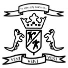

Bu çevirinin tüm yayın haklarım sahiplendik. Tanıtım alıntıları dışında - makul boyutlarda- izinsiz çoğaltılması ahlak kurallarına ve yasalarımıza göre aykırı sayılmaktadır. Böyle bir harekete kalkışmak istediğinizde önce bize sorarsanız uygar dünya adına seviniriz.
P.S.: Tüm fotokopi fanzinler, yukardaki açıklamadan bağımsızdırlar. Onlar istedikleri ALTIKIRKBEŞ kitabını veya metnini çoğaltabilir, bozup yeniden yaratabilirler. Okurlarımızı yasal dergileri değil "fotokopi fanzinleri" izlemeye çağırıyoruz.
Onlar sizi uçurumdan aşağı itecek güce sahiptirler ve uçmayı öğrenmenin zamanı geldi.
Yaşasın FOTOKOPİ, Yaşasın KAOS.
ALTIKIRKBEŞ YAYIN bir Kaybedenler Kulübü tribidir.
Stephen Edwin King (Portland, Maine, 1947-)
Donald ve Nellie Ruth Pillsbury King'in ikinci oğlu. Anne ve babası ayrıldığında Stephen daha tay tay yürüyordu. O ve ağabeyi David anneleri tarafından büyütüldü.
Stephen, University of Maine'de eğitimini sürdürürken haftalık okul gazetesinde bir sütunu vardı, savaş karşıtı öğrenci hareketlerinde çok aktifti. 1970 yılında Fen Fakültesinden mezun oldu ve lise öğretmenliği hakkını kazandı. Yüksek tansiyon, kısıtlı görüş, düztabanlık, hasarlı kulağı yüzünden çürüğe çıkarılarak askere alınmadı.
Öğrenciyken tanıştığı Tabitha Spruce ile 1971 Ocak'ında evlendiler. Üç çocukları olacaktı: Naomi Rachel, Joe Hill and Owen Phillip.
Stephen, öğretmen olarak hemen iş bulamadığı için bir sanayi çamaşırhanesinde işçi olarak çalışacaktı. Bir yandan da erkek dergilerine kısa öyküler satıyordu. 1971 güzünde Hampden'da bir lisede İngilizce dersleri vermeye’ başladı. Akşamları ve hafta sonları kısa öyküler üretmeye devam ediyor, romanları üzerine çalışıyordu.
1973 baharında Doubleday & Co. Carrie’nin basımını kabul etti. O yıl artık öğretmenliği bırakarak hayatını yazdıklarıyla kazanmaya karar verdi. Yayınlanan ikinci romanı Salem's Lot’u garajdaki küçük bir odada yazarken annesi 59 yaşında kanserden ölüyordu.
Çocukluğundan beri gözlük kullanan, mavi gözlü, açık tenli, siyah gür saçlı, uzun boylu, yaklaşık yüz kilo ağırlığındaki Stephen'in ataları İskoç-İrlanda asıllıydır.